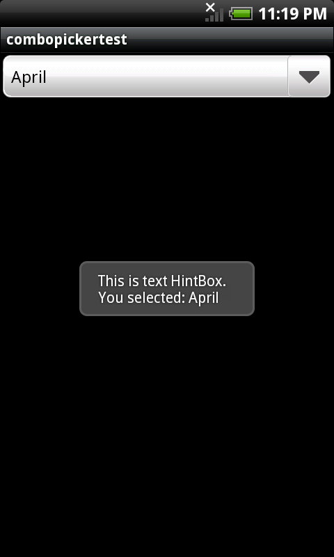

HintBox is a message indicator. It shows a quick message on the surface of screen and does not interrupt users manipulation. HintBox disappears automatically after a short duration and does not accept any interaction event. If the application needs users responses for further actions, consider using Status Bar Notification instead.
makeTextN() is an easy way to show a text message on the screen. Developers need not to prepare any widget but just a text string that they want to inform users. makeTextN() is going to create a HintBox instance and return its pointer as well. Developers need to delete the instance if it is not useful anymore. There are three parameters required for makeTextN(), the page pointer, the text message and the displaying duration. For example,
gaia::ui::HintBox* phBox = gaia::ui::HintBox::makeTextN(pPage, "Hello", HintBox::LENGTH_SHORT);
phBox->show();
If you want to reuse the HintBox, just call setText() to change the text message and call show() to bring it out again.
phBox->setText("New Message");
phBox->show();
Otherwise, delete it to release the memory.
delete phBox;
HintBox also allows developers to create their own customized message box. Developers might prepare a preferable widget and call setWidget() to mount it at HintBox. If developers wants to place the HintBox at a specific location, call setGravity() or setLocation() to define the HintBox location. setLocation() is based on the top-left of the screen. Also, the showing duration is configurable by calling setDuration().
phBox = new HintBox(pPage);
phBox->setWidget(pTextWidget);
phBox->setDuration(HintBox::LENGTH_LONG);
phBox->setLocation(150, 450); //150 and 450 pixels relative to left and top boundaries respectively.
phBox->show();